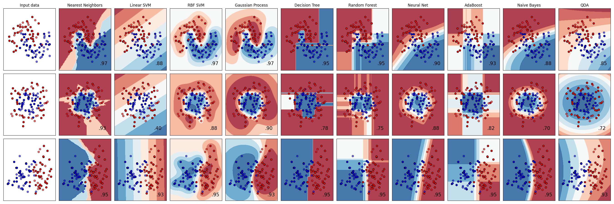

Note
Go to the end to download the full example code or to run this example in your browser via Binder
Classifier comparison¶
A comparison of several classifiers in scikit-learn on synthetic datasets. The point of this example is to illustrate the nature of decision boundaries of different classifiers. This should be taken with a grain of salt, as the intuition conveyed by these examples does not necessarily carry over to real datasets.
Particularly in high-dimensional spaces, data can more easily be separated linearly and the simplicity of classifiers such as naive Bayes and linear SVMs might lead to better generalization than is achieved by other classifiers.
The plots show training points in solid colors and testing points semi-transparent. The lower right shows the classification accuracy on the test set.
# Code source: Gaël Varoquaux
# Andreas Müller
# Modified for documentation by Jaques Grobler
# License: BSD 3 clause
import matplotlib.pyplot as plt
import numpy as np
from matplotlib.colors import ListedColormap
from sklearn.datasets import make_circles, make_classification, make_moons
from sklearn.discriminant_analysis import QuadraticDiscriminantAnalysis
from sklearn.ensemble import AdaBoostClassifier, RandomForestClassifier
from sklearn.gaussian_process import GaussianProcessClassifier
from sklearn.gaussian_process.kernels import RBF
from sklearn.inspection import DecisionBoundaryDisplay
from sklearn.model_selection import train_test_split
from sklearn.naive_bayes import GaussianNB
from sklearn.neighbors import KNeighborsClassifier
from sklearn.neural_network import MLPClassifier
from sklearn.pipeline import make_pipeline
from sklearn.preprocessing import StandardScaler
from sklearn.svm import SVC
from sklearn.tree import DecisionTreeClassifier
names = [
"Nearest Neighbors",
"Linear SVM",
"RBF SVM",
"Gaussian Process",
"Decision Tree",
"Random Forest",
"Neural Net",
"AdaBoost",
"Naive Bayes",
"QDA",
]
classifiers = [
KNeighborsClassifier(3),
SVC(kernel="linear", C=0.025, random_state=42),
SVC(gamma=2, C=1, random_state=42),
GaussianProcessClassifier(1.0 * RBF(1.0), random_state=42),
DecisionTreeClassifier(max_depth=5, random_state=42),
RandomForestClassifier(
max_depth=5, n_estimators=10, max_features=1, random_state=42
),
MLPClassifier(alpha=1, max_iter=1000, random_state=42),
AdaBoostClassifier(random_state=42),
GaussianNB(),
QuadraticDiscriminantAnalysis(),
]
X, y = make_classification(
n_features=2, n_redundant=0, n_informative=2, random_state=1, n_clusters_per_class=1
)
rng = np.random.RandomState(2)
X += 2 * rng.uniform(size=X.shape)
linearly_separable = (X, y)
datasets = [
make_moons(noise=0.3, random_state=0),
make_circles(noise=0.2, factor=0.5, random_state=1),
linearly_separable,
]
figure = plt.figure(figsize=(27, 9))
i = 1
# iterate over datasets
for ds_cnt, ds in enumerate(datasets):
# preprocess dataset, split into training and test part
X, y = ds
X_train, X_test, y_train, y_test = train_test_split(
X, y, test_size=0.4, random_state=42
)
x_min, x_max = X[:, 0].min() - 0.5, X[:, 0].max() + 0.5
y_min, y_max = X[:, 1].min() - 0.5, X[:, 1].max() + 0.5
# just plot the dataset first
cm = plt.cm.RdBu
cm_bright = ListedColormap(["#FF0000", "#0000FF"])
ax = plt.subplot(len(datasets), len(classifiers) + 1, i)
if ds_cnt == 0:
ax.set_title("Input data")
# Plot the training points
ax.scatter(X_train[:, 0], X_train[:, 1], c=y_train, cmap=cm_bright, edgecolors="k")
# Plot the testing points
ax.scatter(
X_test[:, 0], X_test[:, 1], c=y_test, cmap=cm_bright, alpha=0.6, edgecolors="k"
)
ax.set_xlim(x_min, x_max)
ax.set_ylim(y_min, y_max)
ax.set_xticks(())
ax.set_yticks(())
i += 1
# iterate over classifiers
for name, clf in zip(names, classifiers):
ax = plt.subplot(len(datasets), len(classifiers) + 1, i)
clf = make_pipeline(StandardScaler(), clf)
clf.fit(X_train, y_train)
score = clf.score(X_test, y_test)
DecisionBoundaryDisplay.from_estimator(
clf, X, cmap=cm, alpha=0.8, ax=ax, eps=0.5
)
# Plot the training points
ax.scatter(
X_train[:, 0], X_train[:, 1], c=y_train, cmap=cm_bright, edgecolors="k"
)
# Plot the testing points
ax.scatter(
X_test[:, 0],
X_test[:, 1],
c=y_test,
cmap=cm_bright,
edgecolors="k",
alpha=0.6,
)
ax.set_xlim(x_min, x_max)
ax.set_ylim(y_min, y_max)
ax.set_xticks(())
ax.set_yticks(())
if ds_cnt == 0:
ax.set_title(name)
ax.text(
x_max - 0.3,
y_min + 0.3,
("%.2f" % score).lstrip("0"),
size=15,
horizontalalignment="right",
)
i += 1
plt.tight_layout()
plt.show()
Total running time of the script: (0 minutes 1.598 seconds)